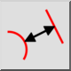

Vzdálenost mezi prvky
Panel nástrojů / Ikona:


Nabídka: Informace > Vzdálenost mezi prvky
Zkratka: I, N
Příkazy: infodistee | in
Jedná se o automatický překlad.
Panel nástrojů / Ikona:


Tento nástroj měří přesnou vzdálenost mezi prvkem a bodem zadaným uživatelem.